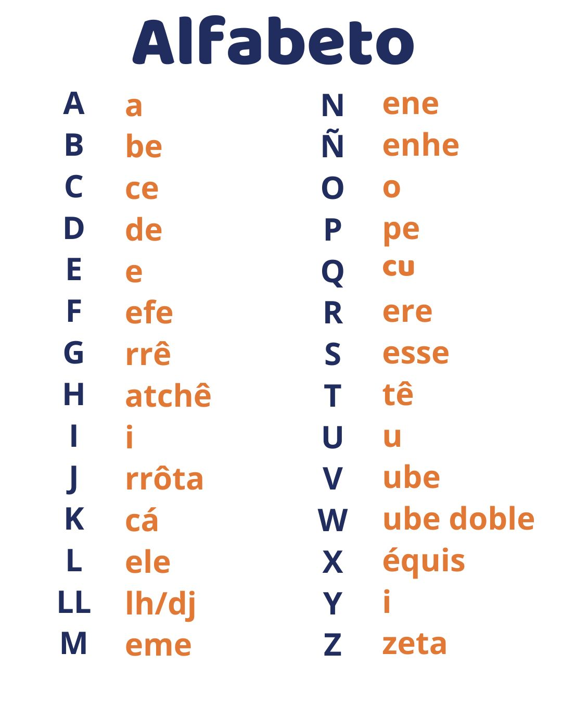
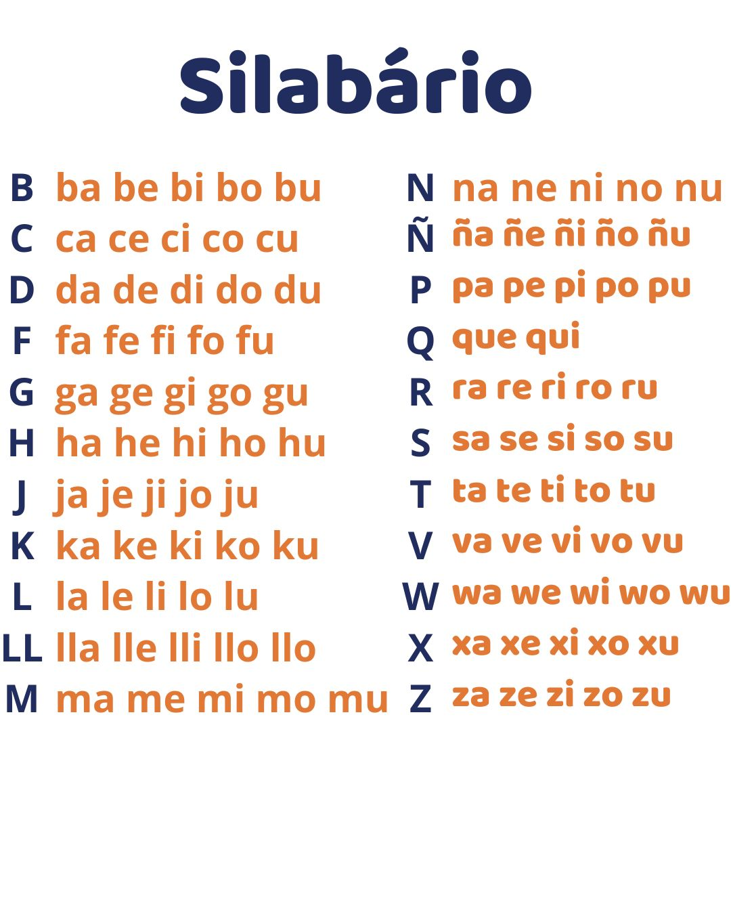
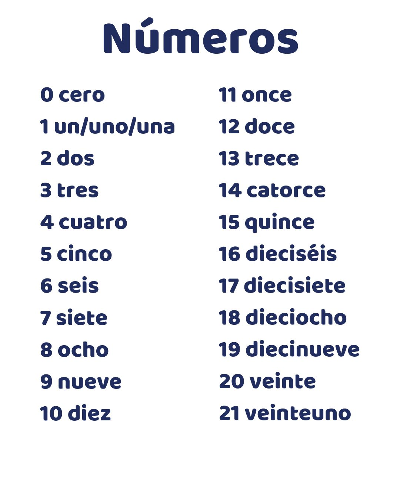
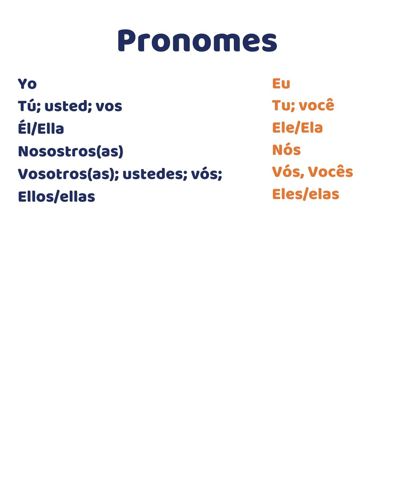
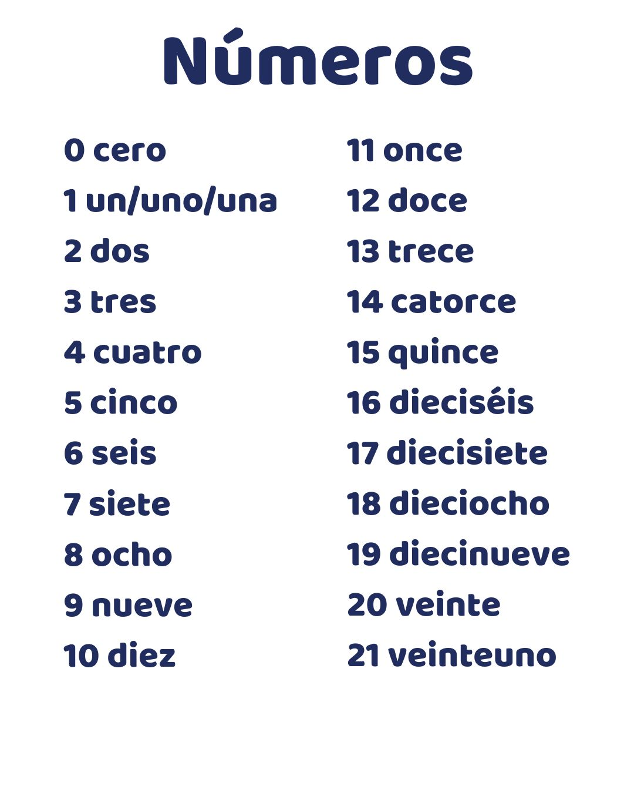
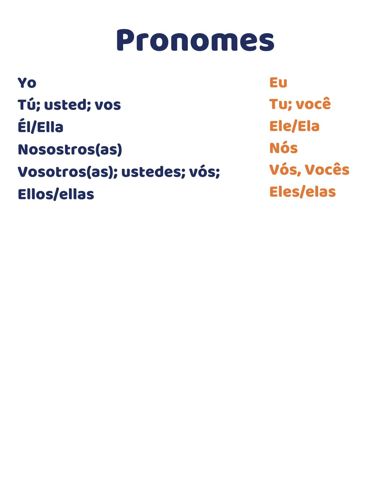

Bem-vindo ao Espanholei
Aprenda a base do espanhol de forma fácil e prática. Este curso é ideal para iniciantes.
Sobre o Curso
Nosso curso oferece uma introdução simples ao idioma espanhol, cobrindo alfabeto, silabário e vocabulário básico.
Origem e Países de Língua Espanhola
A língua espanhola hoje é considerada a terceira língua mais falada no mundo. Surgiu na Península Ibérica, tendo como base o latim vulgar falado pelos romanos. A língua árabe também exerceu influência sobre o espanhol. No século XV o espanhol se tornou a língua oficial da Espanha. Nos dias atuais 22 países tem o espanhol como língua oficial, sendo eles: Argentina, Bolívia, Chile, Colômbia, Costa Rica, Cuba, El Salvador, Espanha, Equador, Guatemala, Guiné Equatorial, Honduras, México, Nicarágua, Panamá, Paraguai, Peru, Porto Rico, República Dominicana, Uruguai e Venezuela.
Nome e Leitura das Letras
Juntando Sílabas
Primeiras Palavras
 




Construindo Primeiras Frases
- Hola, buenos dias. Mi nombre es Maria. Yo soy estudiante. Tengo dieciseis años. Que pasa? - Hola, Maria. Mi nombre es Juan. Yo soy estudiante tambien. Tengo quince años. Estoy bien, Y usted? - Bien tambien. - Yo tengo que ir. Hasta luego. - Hasta luego. Adios.
Contato
Entre em contato conosco para mais informações:
Email: contato@espanholei.com
Telefone: (00) 1234-5678